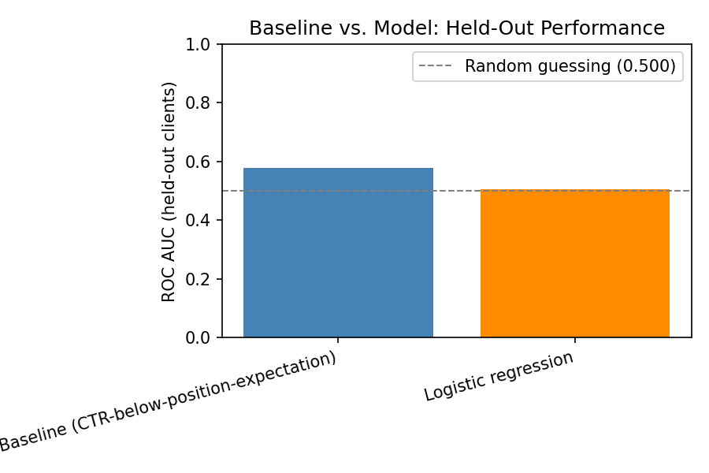
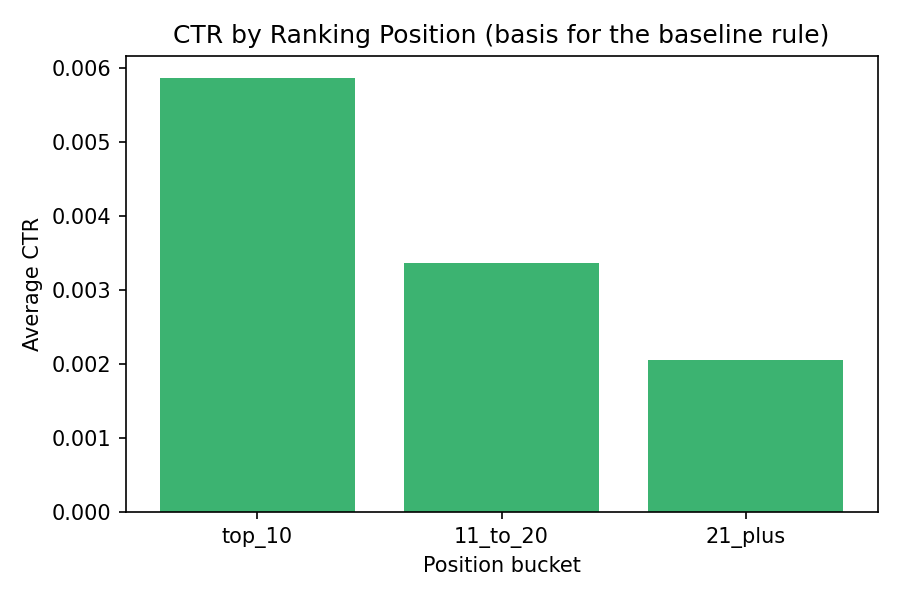

A page can rank well and still fail to earn its clicks. This paper asks whether that gap — CTR falling short of what a page's own search position typically earns — is worth flagging for review, and whether a machine-learned model can catch it better than a transparent hand-written rule.
Using one month of the FlyRank search-performance warehouse, I built a baseline rule comparing each page's actual click-through rate to the average CTR of pages ranking at the same position, then tested a logistic regression model against it on a client-holdout split. The rule scored 0.577 ROC AUC; the model scored 0.506. The simple, explainable rule won. The result is reported here as-is, since an honest negative is still a useful finding, and it shapes the ranked recommendations that follow.
Content teams don't have time to manually review every page in a client's inventory. What they need is a short, defensible list: which pages to check first. This work targets one specific, checkable pattern within that larger question — pages that rank decently but aren't converting that visibility into clicks, a sign the title or meta description isn't doing its job even though the ranking itself is fine.
Getting this wrong is not symmetric. Flagging a healthy page wastes a few minutes of review. Missing a genuinely underperforming page means it keeps losing clicks, quietly, with nobody looking.
This analysis uses the FlyRank internship warehouse release on Hugging Face (FlyRank/internship-warehouse), specifically fact_content_daily_performance. The date window is March 2026 — a mid-panel month, chosen deliberately over the release's final month, which is reserved as an unseen outcome window rather than something to build label logic against.
fact_content_query_90d (the query-level breakdown table) was excluded — this question is about how a page performs overall, not which specific search terms bring it traffic, and joining that table in would add a leakage surface not needed here. No client names, domains, raw URLs, or private queries appear anywhere in this work — only anonymized page and client hashes provided by the release itself.
Whether a page's impressions dropped from the first half of March to the second half — a within-month proxy, not a verified future outcome, since this analysis loads a single month.
For each page, an "expected CTR" is calculated from other pages ranking in the same position bucket (top 10 / 11–20 / 21+). The gap between a page's actual CTR and that expectation, multiplied by its traffic volume, becomes its score. The reason code is ctr_below_position_expectation; the recommended action is fix_title_meta.
Signal check — CONFIRMED: CTR falls cleanly as position worsens (top 10: 0.586% avg CTR → 11–20: 0.336% → 21+: 0.205%, n = 89,867 / 24,888 / 37,226), confirming position is a reliable predictor of expected clicks and safe to build a rule against.
A client-holdout split (grouped by client_hash_id, not row) was used so no single client's pages appear in both train and test — pages from the same client behave similarly, and a random row split would let a model partly memorize client-level patterns instead of learning generalizable signal.
All features (impressions, avg_position, CTR, CTR gap) are computed strictly from the first half of March. The label is computed from the second half. No feature used in training touches second-half data — confirmed programmatically before modeling.
Both methods were scored on the identical held-out client group (0 client overlap, 14,520 pages across 11 clients, base decline rate 45.7%).
| Method | ROC AUC (held-out) |
|---|---|
| Baseline — CTR below position expectation | 0.577 |
| Logistic regression | 0.506 |
| Random guessing | 0.500 |


The transparent rule outperformed the model trained on the same four signals. This is reported directly rather than reframed, a simple rule beating a model is itself a finding worth knowing before deploying either one.
What it can say: the baseline shows real, observed separation between pages likely to decline and pages likely to stay stable, on data it never trained on. This is decision support — a ranked shortlist for a human reviewer — not a certainty about any one page.
What it cannot say: this work does not explain or predict Google's ranking algorithm, and it does not prove that fixing a flagged page's title will improve its performance — that would require an actual intervention and a before/after comparison, not this observational analysis. The decline label is a within-month proxy, not a verified outcome.
Every step in this paper traces back to an executed notebook in the project repository: